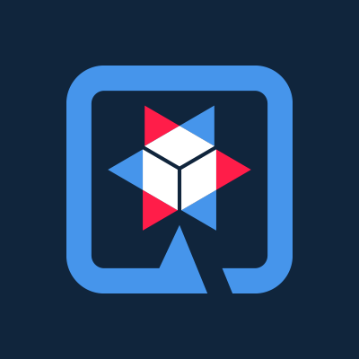
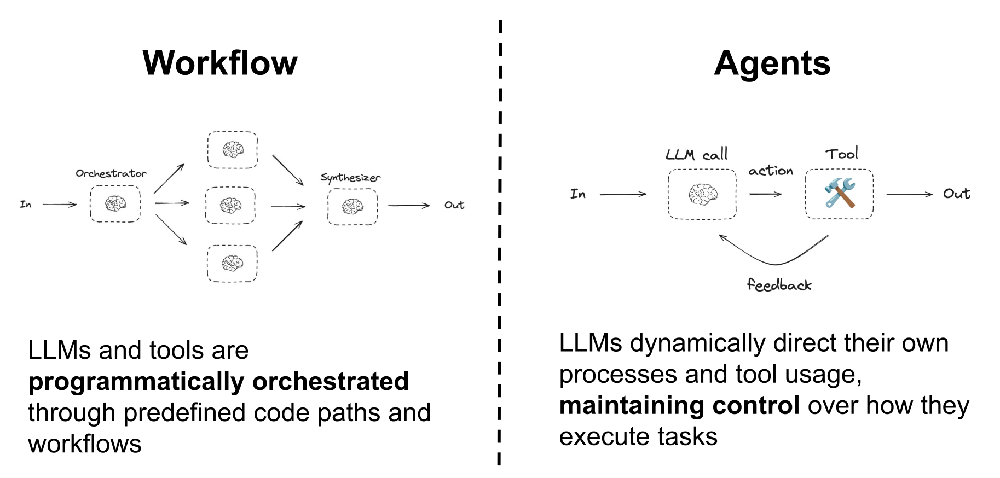
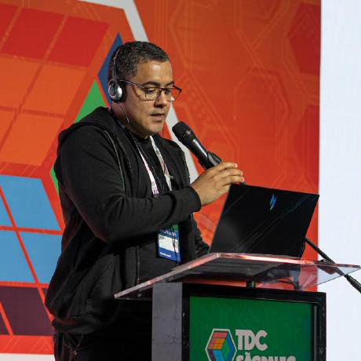

Agentic Workflows com Quarkus Flow e LangChain4J
Matheus Oliveira e Matheus Cruz
Aplicações com IA Integrada (AI Infused applications)
O que isso significa?
Programas de software que possuem recursos de inteligência artificial ou aprendizado de máquina integrados diretamente à sua lógica central e operações diárias.
Você não precisa reiventar a roda
No ecossistema Java, temos diversas bibliotecas que fazem isso pra gente
-
LangChain4J


-
Embabel
-
Spring AI
Aqui, vamos focar no LangChain4J com Quarkus.
Quarkus LangChain4J
Você só precisa adicionar a dependência do provedor:
<dependency>
<groupId>io.quarkiverse.langchain4j</groupId>
<artifactId>quarkus-langchain4j-openai</artifactId>
</dependency>
<dependency>
<groupId>io.quarkiverse.langchain4j</groupId>
<artifactId>quarkus-langchain4j-ollama</artifactId>
</dependency>
<dependency>
<groupId>io.quarkiverse.langchain4j</groupId>
<artifactId>quarkus-langchain4j-watsonx</artifactId>
</dependency>
A forma mais simples de falar com uma LLM
import dev.langchain4j.model.chat.ChatModel;
import dev.langchain4j.model.openai.OpenAiChatModel;
ChatModel model = OpenAiChatModel.builder()
.apiKey(System.getenv("OPENAI_API_KEY"))
.modelName("gpt-4o-mini")
.build();
String response = model.chat("What are the common symptoms of the flu?");
System.out.println(response);
E uma interface na sua aplicação
@RegisterAiService
public interface DoctorAiService {
String ask(String message);
}
// Em um outro bean da sua aplicação:
@Inject DoctorAiService ai;
String answer = ai.ask("What are the common symptoms of the flu?");
Mas só um AI Service não é o bastante
Você vai precisar de prompts
Prompts guiam a LLM a ser o mais precisa possível, evitando ambiguidade (engenharia de prompt).
@RegisterAiService
public interface DoctorAiService {
@SystemMessage("You are a medical expert...")
@UserMessage("{message}")
String ask(String message);
}
LLMs são stateless
Cada requisição é uma nova requisição: você precisa manter o estado da conversação com a LLM.
@RegisterAiService
public interface DoctorAiService {
@SystemMessage("You are a medical expert...")
@UserMessage("{message}")
String ask(@MemoryId String sessionId, String message);
}
Tools
LLMs não são determinísticas e não sabem executar tarefas específicas do seu negócio. Com tools, a LLM executa operações de forma determinística, usando o seu código.
public class AgendaTools {
@Inject
AgendaRepository repo;
@Tool("get available agenda")
public Agenda getAgenda() {
return repo.availableAgenda();
}
}
Tools
Basta registrar a classe de tools no seu AI Service:
@RegisterAiService(tools = {AgendaTools.class})
public interface DoctorAiService {
@SystemMessage("You are a medical expert...")
@UserMessage("{message}")
String ask(@MemoryId String sessionId, String message);
}
RAG
Retrieval-Augmented Generation: documentos e informações da que dão contexto à LLM.
Guardrails
Validam a entrada (prompt injection) e a saída (alucinação, conteúdo inadequado) do seu AI Service.
@RegisterAiService(tools = {AgendaTools.class})
public interface DoctorAiService {
@InputGuardrails(PromptInjectionGuard.class)
@OutputGuardrails(MedicalAnswerGuard.class)
String ask(@MemoryId String sessionId, String message);
}
Isso é a base
AI Services resolvem muitos problemas, mas e quando o objetivo exige um workflow: vários AI Services encadeados, de diferentes providers, colaborando entre si até chegar ao resultado?
Agentic Systems
O que são sistemas agênticos?
Sistemas agênticos usam LLMs e tools para resolver tarefas complexas, e podem ir de fluxos predefinidos a sistemas totalmente autônomos.
Fonte: Building Effective Agents (Anthropic) · 19 dez 2024
Workflows vs. Agents
Segundo a Anthropic, dentro dos sistemas agênticos, existe uma distinção arquitetural importante:
Workflows
LLMs e tools orquestrados por caminhos de código predefinidos
Quem decide o caminho: o seu código
Agents
LLMs dirigem dinamicamente o próprio processo e o uso de tools, mantendo o controle de como executam a tarefa
Quem decide o caminho: o LLM
Workflows vs. Agents

Fonte: LangChain4j Docs: Agents
4 padrões base de agentes
Sequence
um após o outro, a saída vira entrada
Parallel
ao mesmo tempo, resultados combinados
Loop
repete até o resultado ser bom o suficiente
Conditional
o caminho depende de uma condição
1º agente: CreativeWriter
@RegisterAiService
public interface CreativeWriter {
@Agent(name = "Creative writer", description = "Draft a short story about a topic.", outputKey = "story")
@SystemMessage("""
You are a creative fiction writer.
Write short, vivid stories, 4–6 sentences long.
""")
@UserMessage("""
Topic: {topic}
Write a short story about this topic.
""")
String draft(@V("topic") String topic);
}
2º agente: AudienceEditor
@RegisterAiService
public interface AudienceEditor {
@Agent(name = "Audience editor", description = "Adapt story to a target audience.", outputKey = "story")
@SystemMessage("""
You rewrite stories to better fit the target audience.
Keep structure similar but adjust language, tone, and difficulty.
""")
@UserMessage("""
Audience: {audience}
Rewrite the story below so it is ideal for this audience.
Story:
{story}
""")
String adapt(@V("story") String story, @V("audience") String audience);
}
3º agente: StyleEditor
@RegisterAiService
public interface StyleEditor {
@Agent(name = "Style editor", description = "Adapt story to a specific writing style.", outputKey = "story")
@SystemMessage("""
You rewrite stories in the requested writing style
(for example: fantasy, noir, comedy, sci-fi).
Keep the meaning, adjust style.
""")
@UserMessage("""
Style: {style}
Rewrite the story below with this style.
Story:
{story}
""")
String restyle(@V("story") String story, @V("style") String style);
}
@SequenceAgent
@RegisterAiService
public interface StoryCreatorWithConfigurableStyleEditor {
@SequenceAgent(outputKey = "story", subAgents = { CreativeWriter.class, AudienceEditor.class,
StyleEditor.class })
String write(@V("topic") String topic, @V("style") String style, @V("audience") String audience);
}
@ParallelAgent: DinnerAgent
@RegisterAiService
public interface DinnerAgent {
@Agent(name = "Dinner planner", outputKey = "dinner")
@SystemMessage("""
You suggest a single, concrete dinner option in the given city
for a given mood. Be specific and short.
""")
@UserMessage("""
City: {city}
Mood: {mood}
Suggest where to have dinner (one place, one sentence).
""")
String suggestDinner(@V("city") String city, @V("mood") Mood mood);
}
@ParallelAgent: DrinksAgent
@RegisterAiService
public interface DrinksAgent {
@Agent(name = "Drinks planner", outputKey = "drinks")
@SystemMessage("""
You suggest one place for drinks after dinner, matching the mood.
""")
@UserMessage("""
City: {city}
Mood: {mood}
Suggest where to have a drink (one place, one sentence).
""")
String suggestDrinks(@V("city") String city, @V("mood") Mood mood);
}
@ParallelAgent: ActivityAgent
@RegisterAiService
public interface ActivityAgent {
@Agent(name = "Activity planner", outputKey = "activity")
@SystemMessage("""
You suggest one short activity to wrap up the evening.
""")
@UserMessage("""
City: {city}
Mood: {mood}
Suggest one activity, after dinner and drinks, to finish the evening.
""")
String suggestActivity(@V("city") String city, @V("mood") Mood mood);
}
@ParallelAgent
@RegisterAiService
public interface EveningPlannerAgent {
@Output
static EveningPlan toEveningPlan(@V("city") String city, @V("mood") Mood mood, @V("dinner") String dinner,
@V("drinks") String drinks, @V("activity") String activity) {
return new EveningPlan(requireNonNullElse(city, "unknown city"), mood != null ? mood : Mood.CHILL,
requireNonNullElse(dinner, "surprise dinner"), requireNonNullElse(drinks, "surprise drinks"),
requireNonNullElse(activity, "surprise activity"));
}
@ParallelAgent(outputKey = "plan", subAgents = { DinnerAgent.class, DrinksAgent.class, ActivityAgent.class })
EveningPlan plan(@V("city") String city, @V("mood") Mood mood);
}
@LoopAgent: StyleScorer
public interface StyleScorer {
@UserMessage("""
You are a critical reviewer.
Give a review score between 0.0 and 1.0 for the following story
based on how well it aligns with the style '{{style}}'.
Return only the score and nothing else.
The story is: "{{story}}"
""")
@Agent(description = "Score a story based on how well it aligns with a given style", outputKey = "score")
double scoreStyle(@V("story") String story, @V("style") String style);
}
@LoopAgent: StyleEditor
public interface StyleEditor {
@UserMessage("""
You are a professional editor.
Analyze and rewrite the following story to better fit and be
more coherent with the {{style}} style.
Return only the story and nothing else.
The story is "{{story}}".
""")
@Agent(description = "Edit a story to better fit a given style", outputKey = "story")
String editStory(@V("story") String story, @V("style") String style);
}
@LoopAgent
@RegisterAiService
public interface StyleReviewLoopAgentWithCounter {
@ExitCondition(testExitAtLoopEnd = true)
static boolean exit(@V("score") double score, @LoopCounter int loopCounter) {
loopCount.set(loopCounter);
return score >= 0.8;
}
@LoopAgent(description = "Review the given story to ensure it aligns with the specified style",
outputKey = "story", maxIterations = 5,
subAgents = { StyleScorer.class, StyleEditor.class })
String write(@V("story") String story);
}
@ConditionalAgent
@RegisterAiService
public interface ExpertsAgent {
@ActivationCondition(MedicalExpert.class)
static boolean activateMedical(@V("category") RequestCategory category) {
return category == RequestCategory.MEDICAL;
}
@ActivationCondition(LegalExpert.class)
static boolean activateLegal(AgenticScope agenticScope) {
return agenticScope.readState("category", RequestCategory.UNKNOWN)
== RequestCategory.LEGAL;
}
@ActivationCondition(TechnicalExpert.class)
static boolean activateTechnical(@V("category") RequestCategory category) {
return category == RequestCategory.TECHNICAL;
}
@ActivationCondition(UnknownExpert.class)
static boolean activateUnknown(@V("category") RequestCategory category) {
return category == RequestCategory.UNKNOWN;
}
@ConditionalAgent(outputKey = "response",
subAgents = { MedicalExpert.class, LegalExpert.class,
TechnicalExpert.class, UnknownExpert.class })
String askExpert(@V("request") String request);
}
Padrões de Agentes
- @SequenceAgent permite você executar agentes de forma sequencial
- @ParallelAgent permite você executar diversos agentes ao mesmo tempo
- @LoopAgent como um for-loop no Java, permite você executar agentes até uma dada condição for satisfeita
- @ConditionalAgent permite você dado uma condição utilizar ou não um agente
- @HumanInTheLoop permite de forma programática pegar um input ou feedback de um humano
- Non-AI agents permite com que você escreva código para performar alguma tarefa
Quarkus Flow + LangChain4J
O Quarkus Flow é a camada de orquestração durável e observável dos seus agents:
Durabilidade
Loops agênticos de longa duração sobrevivem a restarts da aplicação
Observabilidade
Traces, logs e visualizadores no Dev UI para cada execução
Integração
Misture tasks de IA com HTTP, mensageria e eventos agendados
Baseado na Open Workflow Specification (CNCF sandbox) · docs.quarkiverse.io/quarkus-flow
Opção 1: Java DSL + AI Services
@RegisterAiService
@ApplicationScoped
@SystemMessage("""
You draft a short, friendly newsletter paragraph.
Return ONLY the final draft text (no extra markup).
""")
public interface DrafterAgent {
@UserMessage("Brief:\n{{brief}}")
String draft(@MemoryId String memoryId, @V("brief") String brief);
}
@ApplicationScoped
public class NewsletterFlow extends Flow {
@Inject
DrafterAgent drafterAgent;
@Override
public Workflow descriptor() {
return workflow("newsletter-drafter")
.tasks(agent("draftAgent", drafterAgent::draft, String.class))
.build();
}
}
Opção 2: sem reescrever seus agents
- Seus @SequenceAgent, @ParallelAgent, @LoopAgent e @ConditionalAgent viram workflows automaticamente, em build-time
- Ganham as mesmas capacidades de um workflow escrito na mão: Observabilidade, Durabilidade, DevUI e outros.
DEMO
Experimente!
Acesse os slides
Matheus Cruz

- Sr. Software Engineer na IBM
- Quarkus and Quarkus Flow contributor
- CNCF Open Workflow Specification (SDK Java) contributor
- Quarkus Club Coordinator
- Dapr Meteor